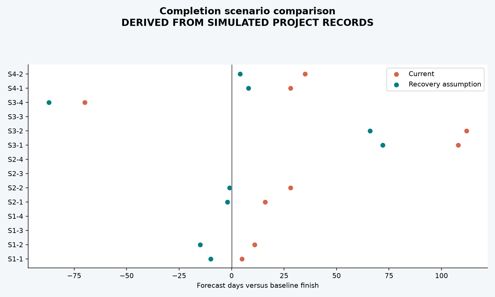

Baseline completion 2027-01-04; current rate extrapolation UNAVAILABLE: stalled packages; recovery UNAVAILABLE: stalled packages. The recovery assumes 25% more weekly production and 8% premium on remaining forecast cost, giving GBP 357.81m EAC. Latest forecastable package finishes 2027-03-22; stalled packages ['S1-3', 'S1-4', 'S2-3', 'S2-4', 'S3-3', 'S4-3', 'S4-4']. An overall finish is unavailable while any incomplete package has zero recent production. Scenario effectiveness has not been observed. Discrete station/signaling quantities make four-week rates volatile. A zero rate returns no finite finish date.
